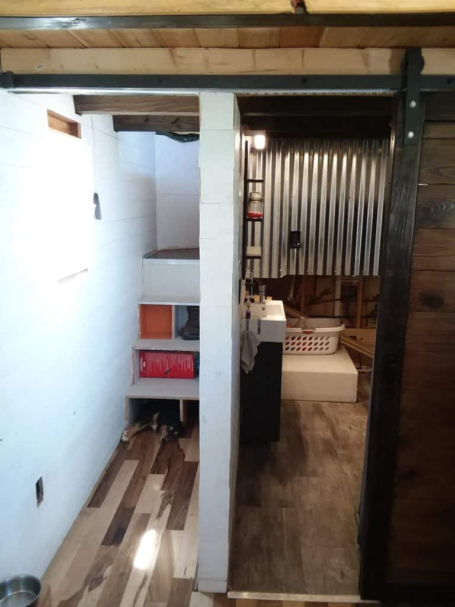
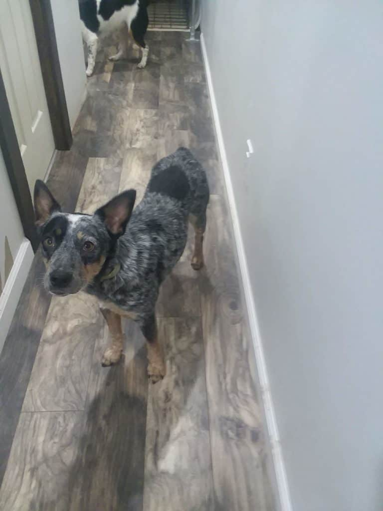
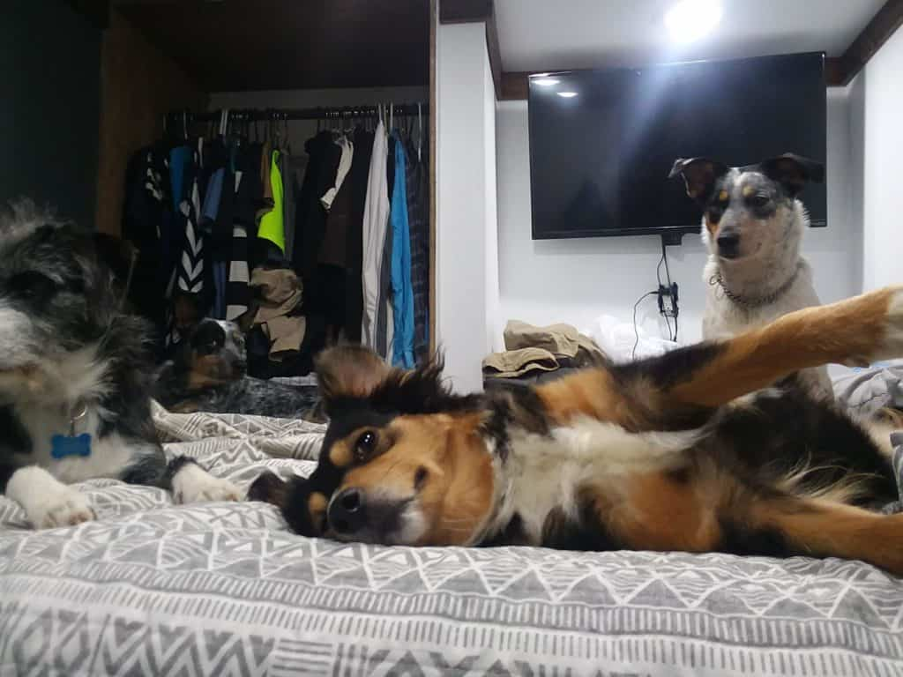
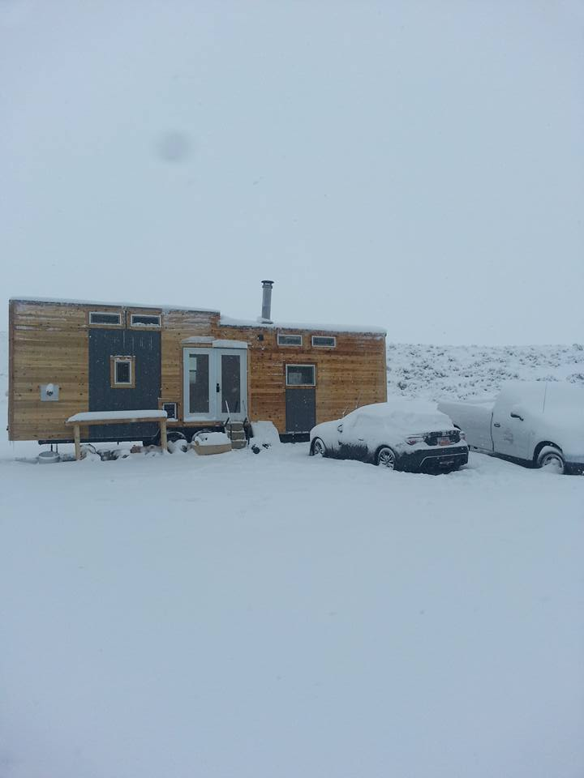
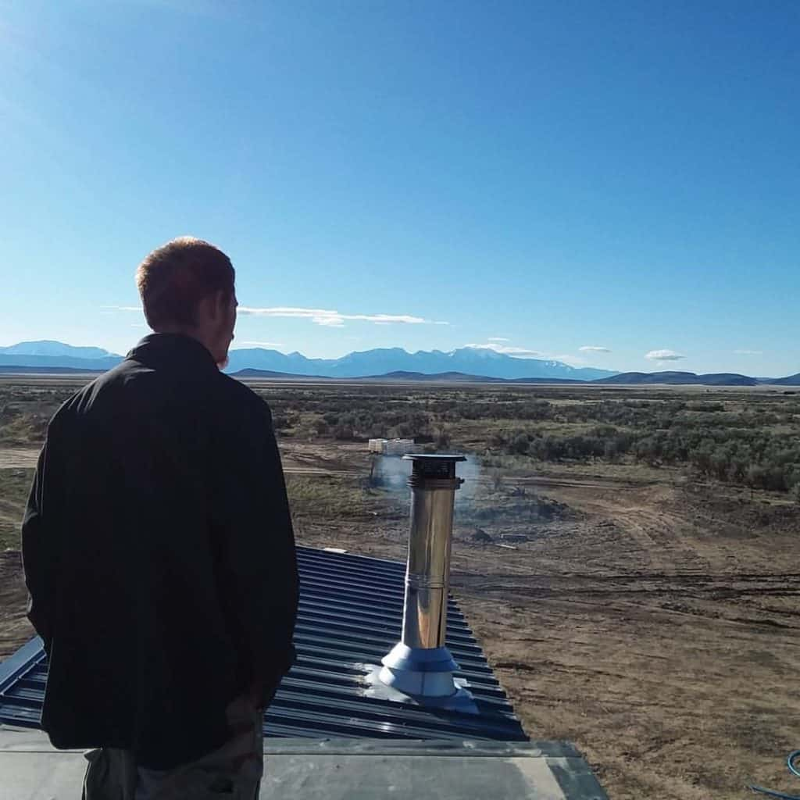

August 2, 2019
This article has been reviewed in accordance with our editorial policy.
The first tiny house my husband built had two bedrooms that were separated from the rest of the house. We did this for privacy and practical use.
So, how can you have a separate bedroom in a tiny house? You need to have walking room and a door to your bedroom. You can have a closed off downstairs bedroom or a loft with walking space. There are different ways to do this based on what type of tiny house you have.
Here I want to go through some of the concerns that people have about going tiny, such as privacy with their own bedroom, and explain how you can still live the way that fits you best but just in a smaller space.


You can separate your bedroom from the rest of the house in a few different ways. If you have a loft you can build a walkway beside the loft or under it to create standing space in your room.

In our first tiny house on wheels (THOW) we had a hallway running along the bathroom, under the loft. This led to the stairs heading up to the room's standing space in the back of the loft. This way we could fit a king size bed in our loft and still be able to walk around in our bedroom.
Another additional feature of this layout was that the bathroom door could also cover the hallway, leading to a completely closed off bedroom. This allowed for complete privacy in the bedroom.


Another option, without lofts, is to have a downstairs bedroom that is closed off. There are many options for these. You can find lots of ideas for how to have a separate bedroom in a tiny house that is not on wheels. It is a little harder to find one in a THOW.
Downstairs bedrooms will take up more floor space in your home. Some people want this type of bedroom to avoid having a ladder. In our first house we had stairs going up to our bedroom loft. Having a well designed loft can often times be better than a downstairs bedroom.
Your bedroom is an important part of your life. It is understandable that you would want the most comfortable option for you. Consider both of the positive and negative reasons for having this style of room.
The reason our first house had two bedrooms, each with their own standing space, is because we were anticipating having another family member live with us. It ended up that it was just me and my husband living in it.
I definitely wanted a closed off bedroom for privacy. I wanted to feel alone when I was sleeping, not like there was someone else in my room, besides my husband. And I wanted to have a place to get dressed where I was not holding the bathroom hostage.
If you are living with other family members, it is a great idea to have a door to your room. This way you are not taking up the bathroom just to get changed or do other things, like makeup. The other option is to get dressed in your living room or kitchen. It can also feel awkward to get dressed in those places, especially if you constantly have to adjust curtains.
One thing to consider is your pets. My husband and I have five dogs in our tiny house! We do not like to have them roam the house at night because they are terribly smart and can get into the trash. Having a closed off bedroom allowed us to leave them all out at night and not worry about them getting into anything else.
Having a separate bedroom can sound like a good idea, but there are some downfalls. The first one being that you typically have a hallway. This means wasting space. A hallway takes up space that you cannot use for storage or living area, it is relatively unused space.
Having a hallway leading up to a loft can be great for using stairs and not relying on a ladder. However, if your house is around 200 Sq. Ft. then this is a lot of wasted space. There are a couple of designs that avoid this.
The way to avoid having a hallway is to have your bedroom on one side of your home and your bathroom on the other side. This does eliminate a lot of creative designs for tiny homes though. If you have built a house that's plenty big enough for you, then this will not be a concern either.
Another caveat to having a separate bedroom is wasted space in the room. Even if you don't have a hallway, you may still be wasting space. There is limited room around your bed and it is hard to walk around in, unless there is a lot of room dedicated to that space. And it is also hard to have storage in that room.
If you live by yourself or only with your spouse and you are not concerned about your privacy then this may just be wasting space for you. Often times people want a private bedroom because they don't want to feel like they are living in a tiny house.
You should craft your home to what fits your life. If you spend almost no time in your bedroom, then don't worry about having space in it. A tiny house should highlight the important areas of your life while eliminating the wasteful ones.
A tiny house should highlight the important areas of your life while eliminating the wasteful ones.
Cassandra Hui
Keep in mind that if you put everything a big house has into a tiny house, it is no longer a tiny house. You should focus on what fits best into your life and get rid of the unnecessary components.
One concern for many people, when it comes to going tiny, is their privacy. This, of course, is more difficult when you have other family members living with you. There are two different aspects of privacy that affect the way your home feels.
The first is feeling privacy inside your home.
Living in a small space may feel like everyone is involved in every part of your life. There are some ways to help lessen this:
Having less privacy is not always a bad thing. This can help you build a stronger relationship with your spouse as well as recognize what's truly important to you. Having a deeper understanding of yourself is one of the greatest aspects of going tiny.
The second form of privacy is where your house is located.
This can be a real problem for people who live in a tiny house in tightly packed locations. They may have trouble feeling secluded. If this may be a concern for you then I would recommend that you spend a little extra money on thicker insulation and curtains.
If you live in a very rural area then you will feel an extreme amount of privacy regardless of how thick of curtains you have. One of the great aspects of having a tiny house is the location. This is especially true if you live off-grid, like we do.


There are many great options for bedrooms in a tiny house. Some can be pricey but they allow a lot of space or storage.
Other Bedroom Options Include:
Check out some of these other options if the more typical ones do not sound appealing to you.
Can you have a separate bathroom in a tiny house?
Most tiny homes have an actual room for your bathroom. They are small bathrooms, but for the most part they are all closed off with doors.
Can you have a downstairs bedroom in a tiny house on wheels?
There are a lot of options for having a downstairs bedroom in your tiny house on wheels (THOW). This can make it more difficult to fit in storage or other living areas, so you need to focus on what's most important to you.